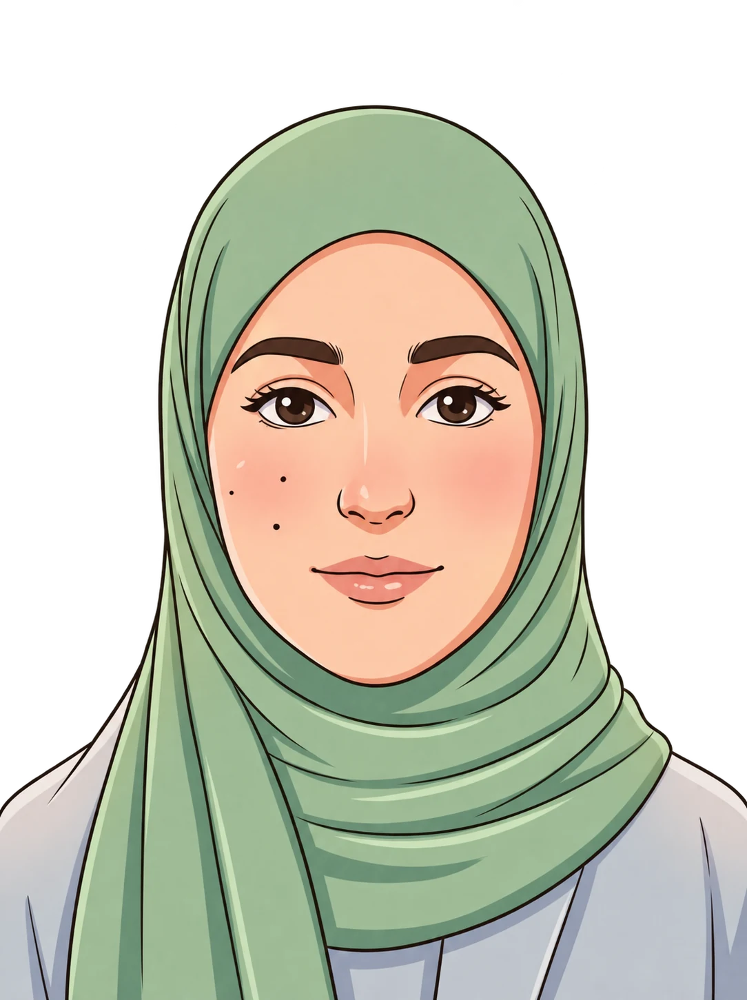
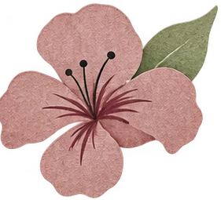

Listen & understand
We start with your idea, audience, goals, and the feeling you want your brand to leave behind.
DESIGN WITH A POINT OF VIEW
I’m Shaima — a graphic designer shaping thoughtful identities and digital experiences with a distinctly human touch.
A FEW THINGS I’VE MADE
Different briefs, one intention: make the idea impossible to overlook.


A LITTLE ABOUT ME
I’m an Emirati graphic designer and University of Sharjah graduate. I love finding the visual thread that makes a brand feel unmistakably itself — then carrying it through every detail, from its first mark to its everyday content.
My work moves between brand identity, social media, promotional design, and typography. I care about clean composition, expressive details, and making the final result as useful as it is beautiful.
Have a project in mind?✳FROM FIRST THOUGHT TO FINAL FILE
We start with your idea, audience, goals, and the feeling you want your brand to leave behind.
I gather references and shape a clear visual idea before refining the details that make it yours.
The chosen direction grows into thoughtful, consistent designs made for where they will actually live.
I check the little things, prepare the final assets, and hand them over ready to use.
WHERE DESIGN MEETS EXPERIENCE
Creative thinking, supported by real-world collaboration and care.
Graphic Designer · Branding & multimedia content
Creating visual identities and multimedia content within the project team.Graphic Designer · Identity, social and visual content
Working with clients from the first brief through revisions and final delivery.Customer Service Manager · Dubai
Built strong foundations in customer care, team coordination, and clear communication.Public Relations Trainee
Supported administration, communications, creative marketing, and coordination across departments.Bachelor of Communication · Graphic Design & Multimedia
Graduated December 2022.THE NEXT GOOD THING STARTS HERE
Have a brand, a fresh idea, or a project that needs a visual voice? I’d love to hear about it.
Start a conversation